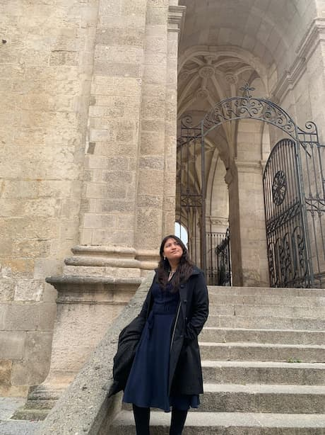
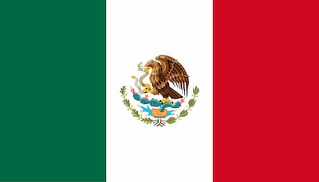

Veronica Becerra Estrada
About Me

I am a 19-year-old girl, I was born in February 1st 2007. I am naturally good at math and have always had the desire to study engineering from a very young age. I would watch Star Wars and Cosmos: A Spacetime Odyssey with my father and it got my attention. Now, and in the future, I hope to become a Flight Software Engineer.
My journey has not been linear, and throughout my life, I have gained many 'real-life' experiences that have helped me develop my abilities:
In The Kitchen: I began working as a pastry assistant when I was 16; for 2 years, I developed a passion for the 'chemistry' involved in baking. This experience helped me realize that I truly enjoy following complex instructions (recipes) to achieve great outcomes.
At Sea: Currently, I work as a stewardess and engine-assistant on a private yatch to finance my education. The engine room has been of the most intense places I have ever been. I have learned how to think quickly, communicate effectively with those around me when under pressure and be able to trust those that I am working with.
Cancun, Mexico

Cancun is located on the Yucatan Peninsula bordering the Caribbean Sea. It is a world renowned place for tourism, famous for its turquoise waters and white sand beaches. This region has a deep connection to the Mayan heritage, which is preserved through local folklore, traditional Jarana dances, and regional cuisine, most notably the Cochinita Pibil which is a slow-roasted pork dish. The coast ecosystem is also a vital habitat for sea turtles, which return to the shores annually to nest. The city's name is derived from the Mayan term " Kaan Kun ", meaning " nest of snakes,".